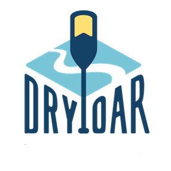
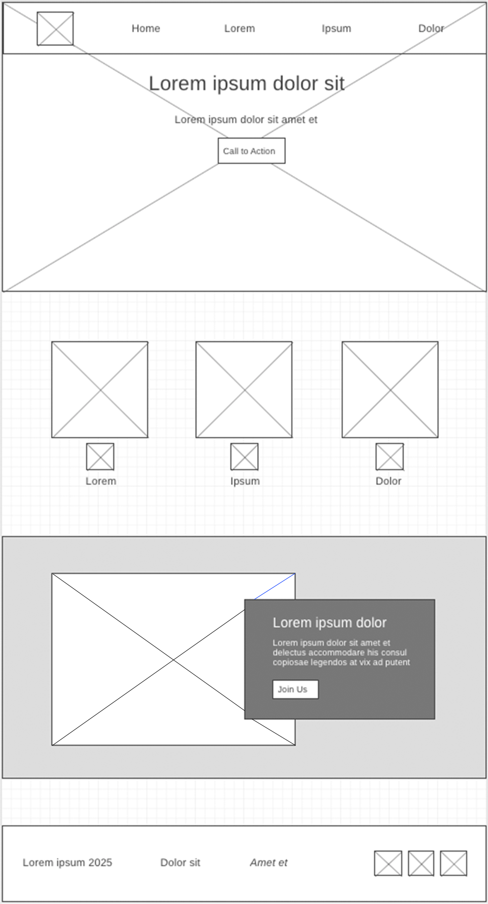

Overview
Purpose
The purpose of this website is to help people plan a white water rafting trip with Dry Oar. Visitors can learn about our trips, see the scenery, and find out how to book an adventure.
Audience
Our audience is families, friends, and adults ages 18 to 55 who enjoy being outdoors and have a moderate vacation budget. They want a fun trip with clear information about prices, difficulty, and safety. The site will help first-time rafters choose a suitable trip. Most visitors will use a phone, while others will plan their trip on a laptop or desktop.
Branding
Website Logo

Style Guide
Color Palette
| Primary | Secondary | Accent 1 | Accent 2 |
|---|---|---|---|
Typography
Heading Font: Georgia
Paragraph Font: Arial
Normal paragraph example
Dry Oar offers river adventures for families and friends. Explore beautiful scenery, spend time outdoors, and enjoy a memorable day on the water.
Colored paragraph example
Trips vary from mild and great for families, to trips exclusively for physically fit and experienced rafters. No matter what type of river adventures you are seeking, Dry Oar can make it happen for you.
Navigation with Hover
Site Map
Wireframes
Home
